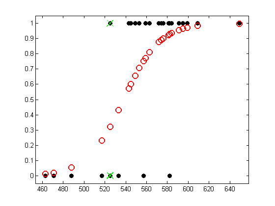

Logistic Regression on the SAT data
Example from Johnson and Albert p87
Contents
Load data
stat = load('satData.txt'); % Johnson and Albert p77 table 3.1 % stat=[pass(0/1), 1, 1, sat_score, grade in prereq] % where the grade in prereq is encoded as A=5,B=4,C=3,D=2,F=1 y = stat(:,1); N = length(y); X = stat(:,4);
Sort data
perm = sortidx(X, 'ascend');
X = X(perm);
y = y(perm);
Fit model
model = logregFit(X, y,'lambda', 0);
[yhat, prob] = logregPredict(model, X);
visualize model fit for each training point
figure; plot(X, y, 'ko', 'linewidth', 2, 'MarkerSize', 7, 'markerfacecolor', 'k'); hold on plot(X, prob, 'ro', 'linewidth', 2,'MarkerSize', 10) axis_pct % draw vertical line at location where SAT score has 2 different label %h = line([525 525], [0 1]); %set(h, 'color', 'k', 'linewidth', 2); % Highlight the two x's with different labels. plot(525, 0, 'gx', 'linewidth', 2, 'markersize', 14); plot(525, 1, 'gx', 'linewidth', 2, 'markersize', 14); printPmtkFigure('logregSATdemo')